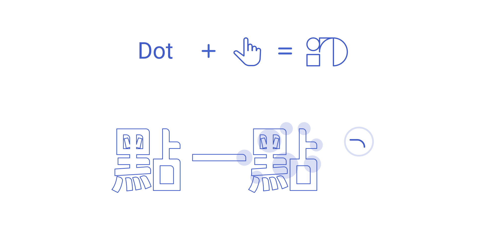
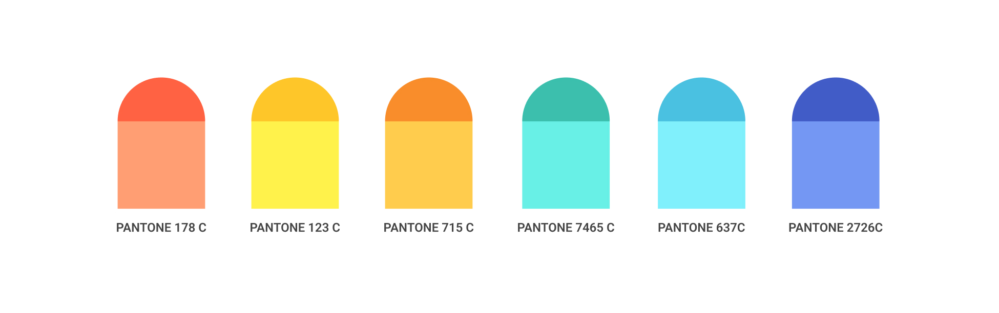
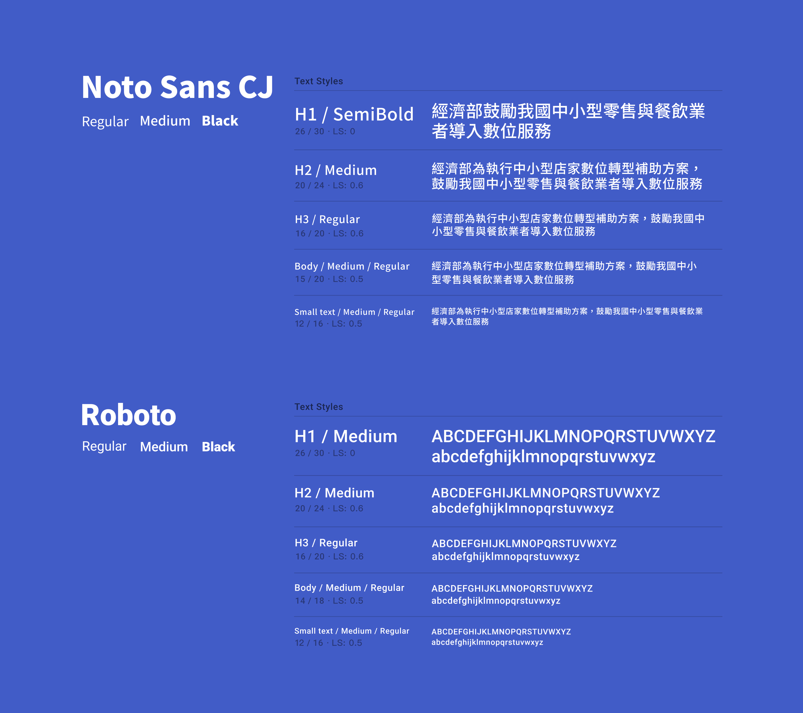
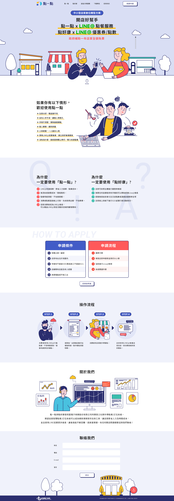

社群外帶點餐/訂位系統
點一點
點一點是社群外帶點餐/訂位系統，為經濟部中小型店家數位轉型補助方案，鼓勵我國中小型零售與餐飲業者導入數位服務，增進店務營運管理效能、拓展行銷通路，進而促進產業升級轉型。期望這套智慧點餐/訂位系統可以成為餐飲業頭家的生財工具，讓店家節省人力及時間成本，並且使用 LINE 招募更多會員，讓會員能不斷回購，提高營業額。
Areas of Work :
Branding、Responsive Web Design
Client :
經濟部 MOEA
Date :
November 29, 2019
Role :
UI Design、Coding
標誌設計 Logo Design
設計系統 Design System
Color Palette
Typography
最終結果 Final Design
我學習到 What I Learned
為了能夠第一時間抓住使用者的眼球，我繪製了所有插畫，並嘗試使用多種效果如 parallax.js 和 pagepiling.js 等套件，讓網頁背景分成多個層次，透過滑鼠和頁面滾動時營造出前後不同的深度，進而增加使用者與網頁的互動性與瀏覽意願，引導使用者完成我們所期望的操作目的。